ASME Competition Rover: Drivetrain Design & Mechanical Testing
Led the mechanical testing and validation of an ASME competition rover while designing, prototyping, and iterating its modular tracked drivetrain through CAD, FEA, and rapid prototyping.
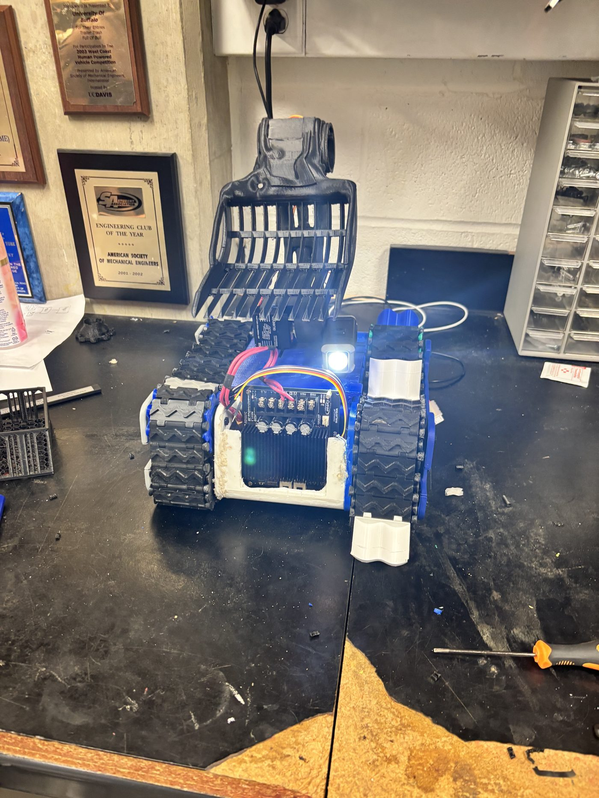
Overview
As part of an ASME competition team, I contributed to the design, prototyping, and validation of a modular tracked drivetrain for an autonomous rover. The objective was to develop a 3D-printable drivetrain capable of reliable mobility across loose terrain while integrating with the rover's overall mechanical system.
I was responsible for both the mechanical design and the mechanical testing of the system. As testing lead, my scope covered the entire rover — evaluating materials and mobility performance across all of its parts, not just the drivetrain. This page walks through that full process, from initial design to final testing.
Engineering Design Process
As Movement Subsystem Lead, I helped guide the development of the rover's drivetrain from initial concept selection through final validation. During the early design phase, our team evaluated multiple locomotion methods, including wheels, Archimedes screws, hexapod legs, and tracked systems. After comparing their expected performance on loose sand and considering the additional demands of the payload mechanism, we selected tracked locomotion because it provided greater surface contact, improved traction, and more effective torque transfer across the competition terrain.
My primary contributions focused on the drivetrain architecture and key mechanical components, including the tread system, custom tread pin, and structural side plate. I designed the drivetrain around a modular philosophy, allowing individual components to be redesigned, reprinted, and validated independently as testing identified weaknesses or opportunities for improvement. This significantly accelerated iteration while reducing manufacturing time and material waste throughout development.
Every design decision required balancing competing engineering constraints, including traction, structural integrity, manufacturability, assembly, weight, and long-term reliability in abrasive sand. The side plate was developed to accurately support the bearing system, maintain sprocket alignment, improve drivetrain rigidity, and simplify assembly. Component layouts and drivetrain architecture were continually refined to ensure reliable operation while remaining practical for additive manufacturing under the competition's 3D-printing requirements.
Iterative engineering played a central role throughout development. One example was an early threaded tread-pin concept, which initially appeared promising because of its secure mechanical connection. However, manufacturing trials revealed that the required vertical print orientation and fine thread geometry produced weak layer adhesion, making the pins susceptible to failure under repeated loading. Rather than forcing the design, we used these results to refine the drivetrain and pursue a more reliable solution. Throughout the project, engineering calculations, finite element analysis, rapid prototyping, and extensive physical testing were used together to validate design decisions and continuously improve subsystem performance before final integration.
CAD Development
The drivetrain was designed and modeled in Fusion 360, allowing the complete system to be refined before manufacturing. Building the full assembly in CAD made it easier to verify component fit, track alignment, and the interaction between moving parts while identifying design issues early in development.
The modular CAD model also supported rapid iteration throughout the project. As testing revealed areas for improvement, individual components could be modified, integrated back into the assembly, and reprinted without redesigning the entire drivetrain.
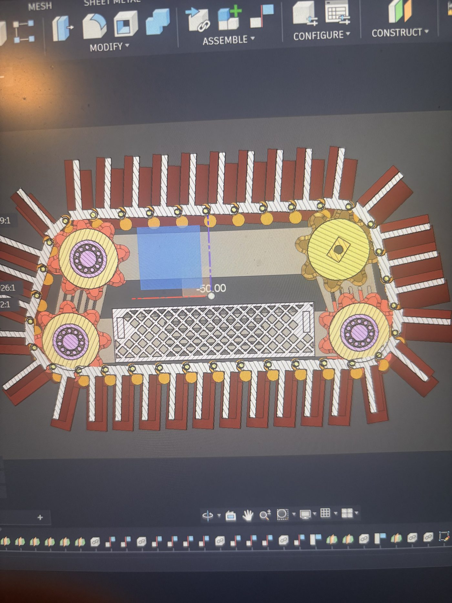
Structural Component Design
Beyond the overall drivetrain assembly, I designed several custom components to improve the strength, reliability, and performance of the track system. Each component was designed to solve a specific mechanical problem while remaining easy to manufacture, test, and refine through multiple prototype iterations.
One example is the structural side plate, which supports key drivetrain components and reinforces the chassis. I also designed a custom tread pin that connects the track links and helps maintain alignment throughout the track system under repeated loading.
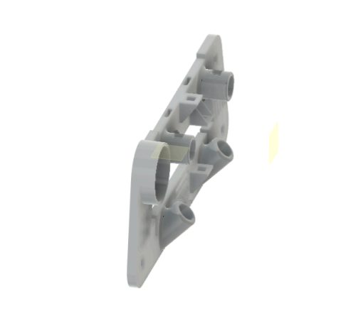
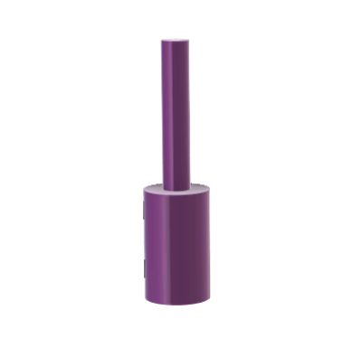
Finite Element Analysis
Before manufacturing, I used finite element analysis (FEA) to evaluate the structural performance of the custom-designed components. Running simulations before printing helped identify potential stress concentrations and deformation early in the design process, reducing unnecessary prototype iterations.
The tread pin was analyzed to evaluate stress distribution under load, while the structural side plate was evaluated for both stress and displacement. These analyses helped validate the designs and guided refinements before manufacturing.
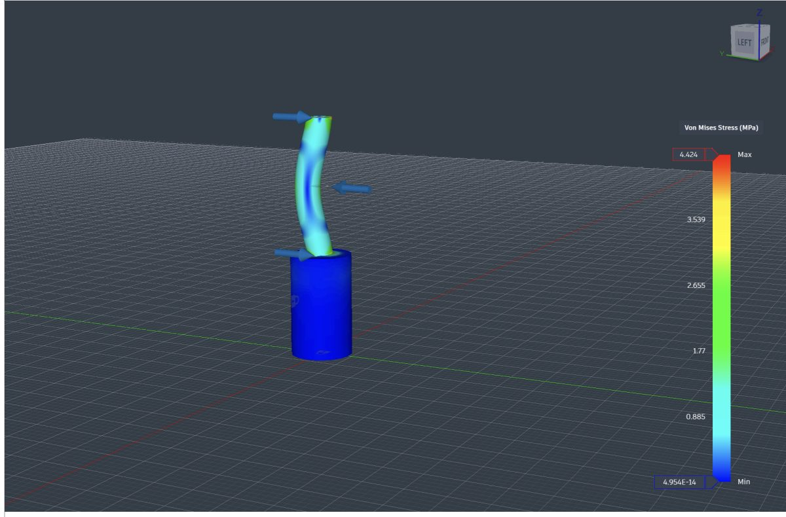
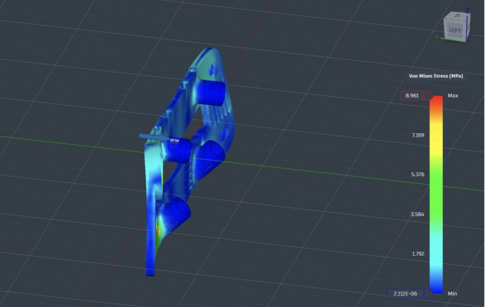
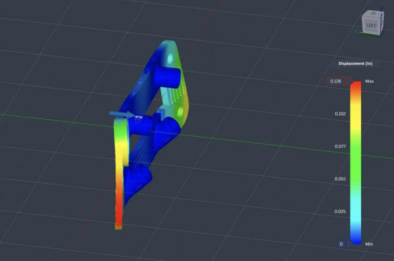
Prototype Manufacturing
The drivetrain was developed through multiple prototype iterations, with each version used to evaluate and refine the design before the next iteration. Rather than aiming for a final design immediately, each prototype served as an opportunity to identify issues, refine components, and validate design decisions through physical testing.
The first assembled prototype was primarily used to verify component fit, assembly, and overall geometry. Feedback from the first prototype guided the next design iteration, with components being redesigned, reprinted, and integrated into a second prototype featuring structural refinements and improved subsystem integration. This iterative process resulted in a more reliable drivetrain before the final rover assembly.
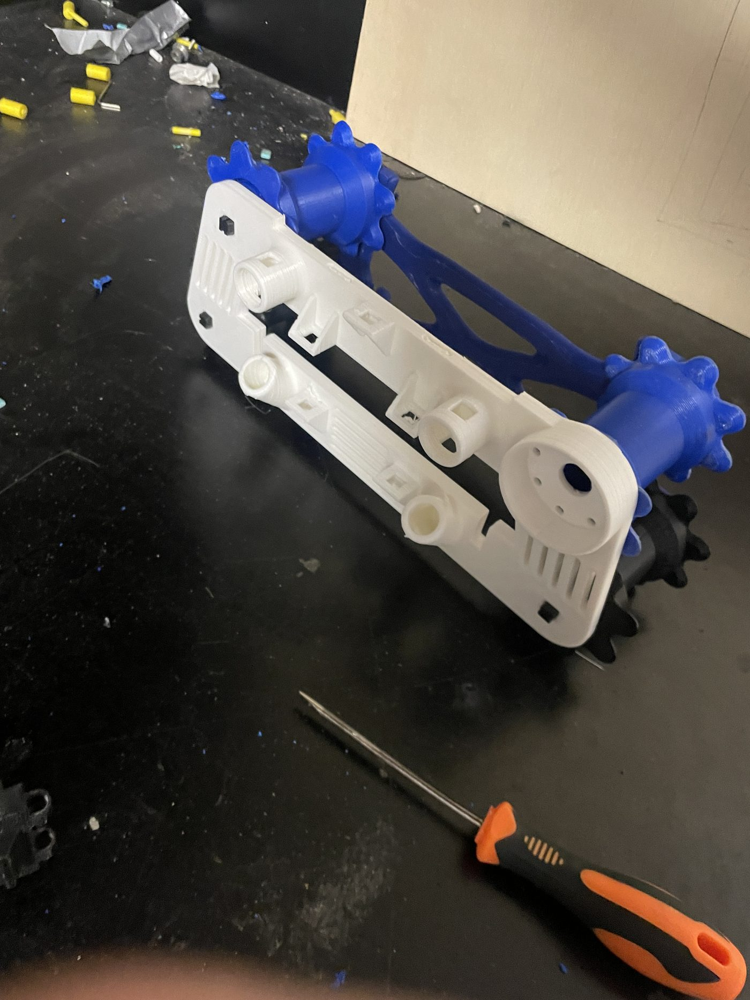
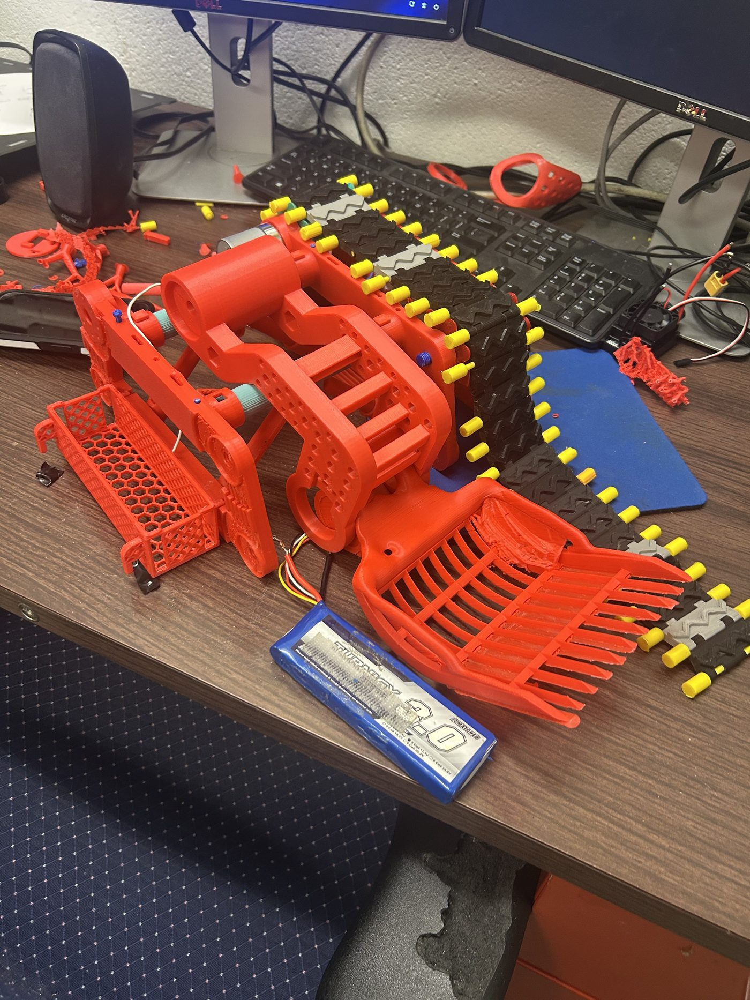
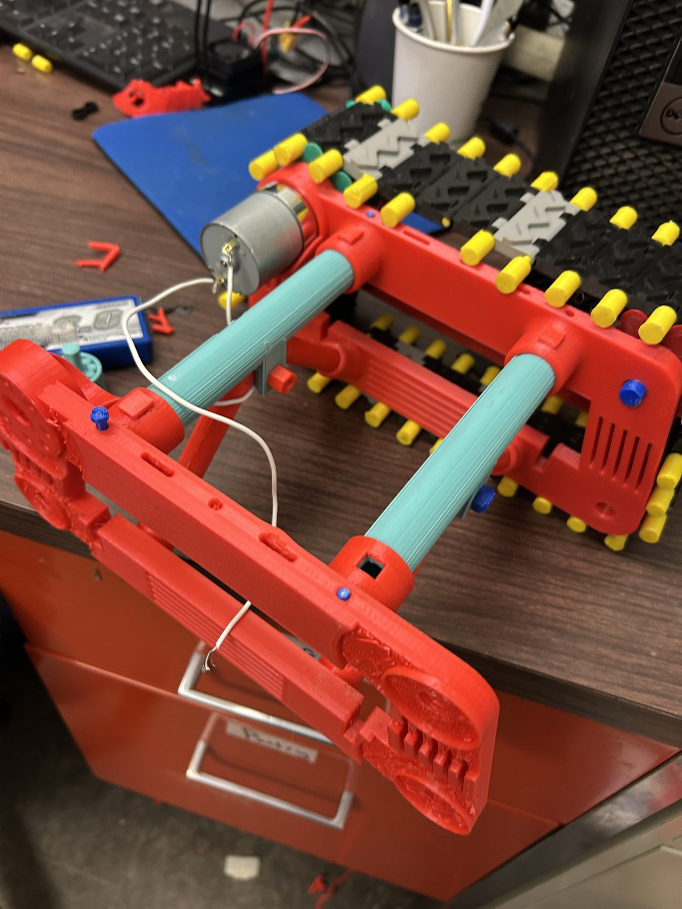
Mechanical Testing & Validation
Mechanical testing made up the largest share of my contribution to this project. As the rover's Mechanical Testing Lead, I developed and carried out standardized testing procedures to evaluate structural components, drivetrain systems, and overall rover performance. Every major design decision was supported through controlled experiments, repeated trials, finite element analysis, and quantitative measurements rather than relying on CAD models alone.
Material & Structural Testing
Material selection was determined through controlled testing rather than manufacturer specifications alone. I evaluated PETG, PET-GF15, PLA, PLA+, TPU85A, and TPU95A to compare stiffness, flexibility, durability, and resistance to deformation for different rover components.
Structural components including the rover arm, scoop, cross-members, brackets, and payload rack were tested under identical conditions using standardized loading procedures. Most experiments applied a 0.5 kg static load for 10 seconds across five repeated trials, while displacement and deflection were measured to compare structural performance. These results guided the use of PET-GF15 and PLA+ for rigid structural members, while TPU was reserved for components requiring vibration isolation or controlled flexibility.
Drivetrain Testing
The drivetrain was evaluated through dedicated experiments measuring traction, slip, rotational efficiency, and motor performance. Multiple tread designs were tested on loose terrain under constant motor conditions, with the W-shaped tread achieving the highest average travel distance of 3.88 m and becoming the final design.
Bearing performance was evaluated using a dedicated motor-driven free-spin rig operating at approximately 6000 rpm (3S, 11.1 V), while separate motor testing measured current draw under increasing load torque using a 12 V power supply. These experiments provided quantitative data that informed drivetrain optimization.
Component Performance Testing
Several structural components were validated using custom-built testing fixtures before final integration. Cross-members, brackets, payload supports, arms, and scoop assemblies were tested under standardized loading conditions to evaluate stiffness and structural behavior.
One example was the scoop testing rig, which used a wooden fixture, fishing line, and a digital force gauge to pull different scoop geometries through sand. Each design was tested through 10 repeated trials, and the stabilized kinetic friction force was compared with surface area data exported from Fusion 360. This allowed the scoop geometry to be optimized using measured performance rather than visual judgment.
Beyond the mechanical structure, testing also evaluated electronic temperatures, camera transmission range, and camera gimbal reliability to ensure the rover remained dependable under expected competition conditions.
Testing Outcomes
The testing program produced more than 40 pages of experimental procedures, results, and engineering analysis within the team's technical report. The findings directly influenced material selection, tread geometry, scoop design, structural reinforcement, cooling strategy, and overall rover reliability.
The most valuable outcome was not simply confirming that the rover worked. Testing repeatedly exposed weaknesses that were not apparent in CAD, allowing components to be redesigned, reprinted, and validated before final integration.
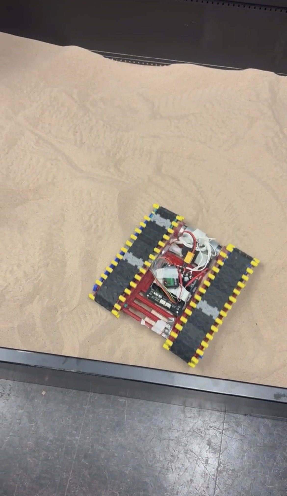
Final Design Integration
After individual components had been designed and validated, they were integrated into the rover's final assembly. This stage combined the results of iterative design, structural analysis, and mechanical testing to ensure the complete system satisfied the competition's performance, weight, and packaging requirements.
The arm and scoop assemblies underwent multiple design iterations as new challenges were identified throughout development. Successive revisions improved structural support, reduced weight, simplified the servo mechanism, and increased the system's ability to withstand the complex loading experienced during operation. Generative design was incorporated into the final arm and scoop connections to remove unnecessary material while improving load distribution without compromising structural integrity.
Although individual subsystems were developed separately, the final integration stage ensured they functioned together as a complete mechanical system. Design refinements made during testing were incorporated into the final assembly, resulting in a lighter, stronger, and more reliable rover ready for competition.
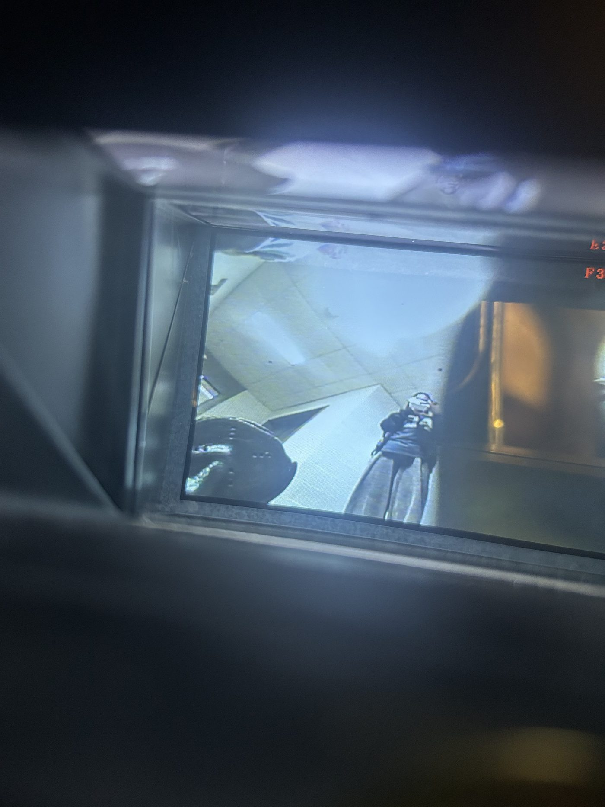
Final Rover
After multiple design iterations, the completed mechanical platform brought together the integrated drivetrain, track system, payload mounting, and onboard electronics into a single working rover.
Results & Lessons Learned
This project reinforced the value of an iterative design process — moving repeatedly between CAD, analysis, prototyping, and physical testing rather than treating any one of those steps as a final answer. Simulation and analysis were useful for catching issues early, but the sand testbed trials consistently revealed behavior that was difficult to predict on the design side alone, particularly around traction and tread geometry.
Working through multiple prototype iterations also underscored the importance of designing for manufacturability from the start, since small changes to fit and tolerance had outsized effects on assembly and performance once printed. Overall, this project was as much about building a disciplined testing and iteration process as it was about the final drivetrain design itself.